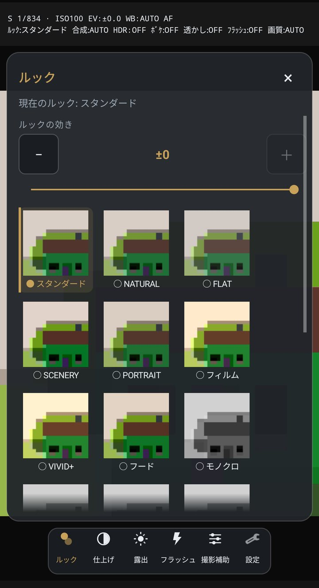
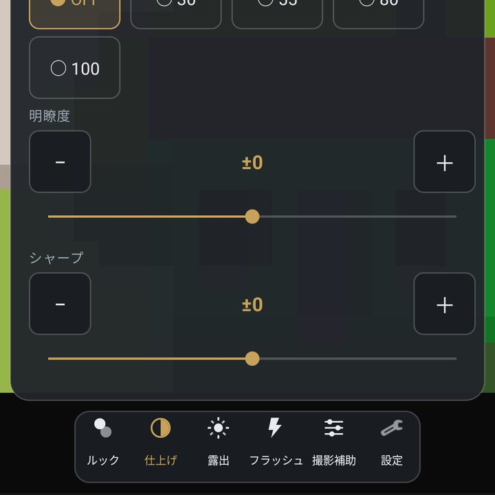

色を決める

ルック（21種類）
下の帯のルックから選びます。選んだ瞬間にプレビューが変わるので、撮る前に決められます。 プレビューを左右に払っても、順に送れます。
スタンダード / NATURAL / FLAT / SCENERY / PORTRAIT / フィルム / VIVID+ / フード / モノクロ / MONO HIGH / MONO SOFT / MONO GRAIN / ティール / ウォーム / ネガ / クローム / STREET / CINE D / CINE V / CINE SOFT / REC709
一覧の上の「ルックの効き」で、その色をどれくらい強く当てるかを ± で変えられます。 「この色は好きだけど、もう少し薄く」というときに下げてください。 表示モードが「プロ」のときは、その上に彩度も出ます。
使わないルックは 設定 > 画作り で隠せます。払って送るときの一周が短くなります。
仕上げ

下の帯の仕上げには4つあります。どれも動かすとプレビューに出ます。
- 階調カーブ（DR）初期値 標準
- 明るいところと暗いところのつなぎ方です。 標準は暗部を持ち上げて明暗差をやわらげる方向、S字はコントラストを上げて黒を沈める方向、 トゥは暗部だけ締めて明るいところは粘らせる形、深黒は黒をいちばん深く置きます。
- ボケの量初期値 なし
- なし / 弱 / 標準 / 強 / 最強 の5段。奥行きを推定して、ピントの外をぼかします（ボケ）。
- 明瞭度
- 質感の立体感です。上げるとものの凹凸が強調され、下げると柔らかくなります。初期値を ±0 として表示します。
- シャープ
- 輪郭のくっきり具合です。初期値を ±0 として表示します。
端末によっては、明瞭度とシャープの強さがプレビューに出ないことがあります（写真には設定どおりに掛かります）。 その端末では、設定 > 画作り に注意書きが出ます。